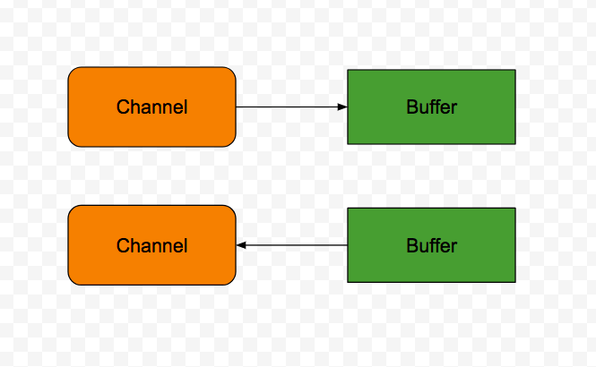
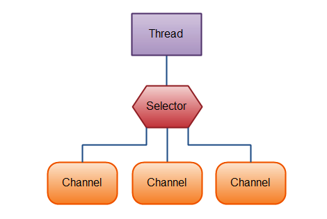

<!doctype html>


  


<html class="theme-next muse use-motion" lang="">
<head>
  <meta charset="UTF-8"/>
<meta http-equiv="X-UA-Compatible" content="IE=edge" />
<meta name="viewport" content="width=device-width, initial-scale=1, maximum-scale=1"/>


<meta http-equiv="Cache-Control" content="no-transform" />
<meta http-equiv="Cache-Control" content="no-siteapp" />


  
  
  <link href="/lib/fancybox/source/jquery.fancybox.css?v=2.1.5" rel="stylesheet" type="text/css" />


  
  
  
  

  
    
    
  

  

  

  

  

  
    
    
    <link href="//fonts.googleapis.com/css?family=Lato:300,300italic,400,400italic,700,700italic&subset=latin,latin-ext" rel="stylesheet" type="text/css">
  


<link href="/lib/font-awesome/css/font-awesome.min.css?v=4.6.2" rel="stylesheet" type="text/css" />

<link href="/css/main.css?v=5.1.0" rel="stylesheet" type="text/css" />


  <meta name="keywords" content="Java NIO," />


  <link rel="shortcut icon" type="image/x-icon" href="/favicon.ico?v=5.1.0" />


<meta name="description" content="概述Java NIO是从Java1.4后加入的新型IO API。主要包括了以下的核心组件

通道
缓冲
选择器

Java NIO: 通道和缓冲标准的IO API中，使用字节流和字符流。在NIO中使用通道和缓冲。数据总是从通道读取然后放入缓冲或者从缓冲读取写入通道

有几种通道和缓冲类型，以下是主要通道类型

FileChannel(文件通道)
DatagramChannel(数据报通道)
S">
<meta property="og:type" content="article">
<meta property="og:title" content="深入理解Java之NIO概述">
<meta property="og:url" content="http://xu6148152.github.io/2017/06/03/深入理解Java之NIO概述/index.html">
<meta property="og:site_name" content="Blog">
<meta property="og:description" content="概述Java NIO是从Java1.4后加入的新型IO API。主要包括了以下的核心组件

通道
缓冲
选择器

Java NIO: 通道和缓冲标准的IO API中，使用字节流和字符流。在NIO中使用通道和缓冲。数据总是从通道读取然后放入缓冲或者从缓冲读取写入通道

有几种通道和缓冲类型，以下是主要通道类型

FileChannel(文件通道)
DatagramChannel(数据报通道)
S">
<meta property="og:image" content="http://xu6148152.github.io/./channel.png">
<meta property="og:image" content="http://xu6148152.github.io/./selector.png">
<meta property="og:updated_time" content="2017-06-03T09:16:37.000Z">
<meta name="twitter:card" content="summary">
<meta name="twitter:title" content="深入理解Java之NIO概述">
<meta name="twitter:description" content="概述Java NIO是从Java1.4后加入的新型IO API。主要包括了以下的核心组件

通道
缓冲
选择器

Java NIO: 通道和缓冲标准的IO API中，使用字节流和字符流。在NIO中使用通道和缓冲。数据总是从通道读取然后放入缓冲或者从缓冲读取写入通道

有几种通道和缓冲类型，以下是主要通道类型

FileChannel(文件通道)
DatagramChannel(数据报通道)
S">
<meta name="twitter:image" content="http://xu6148152.github.io/./channel.png">


<script type="text/javascript" id="hexo.configurations">
  var NexT = window.NexT || {};
  var CONFIG = {
    root: '/',
    scheme: 'Muse',
    sidebar: {"position":"left","display":"post"},
    fancybox: true,
    motion: true,
    duoshuo: {
      userId: '0',
      author: 'Author'
    },
    algolia: {
      applicationID: '',
      apiKey: '',
      indexName: '',
      hits: {"per_page":10},
      labels: {"input_placeholder":"Search for Posts","hits_empty":"We didn't find any results for the search: ${query}","hits_stats":"${hits} results found in ${time} ms"}
    }
  };
</script>


  <link rel="canonical" href="http://xu6148152.github.io/2017/06/03/深入理解Java之NIO概述/"/>


  <title> 深入理解Java之NIO概述 | Blog </title>
</head>

<body itemscope itemtype="http://schema.org/WebPage" lang="">

  


  
  
    
  

  <div class="container one-collumn sidebar-position-left page-post-detail ">
    <div class="headband"></div>

    <header id="header" class="header" itemscope itemtype="http://schema.org/WPHeader">
      <div class="header-inner"><div class="site-meta ">
  

  <div class="custom-logo-site-title">
    <a href="/"  class="brand" rel="start">
      <span class="logo-line-before"><i></i></span>
      <span class="site-title">Blog</span>
      <span class="logo-line-after"><i></i></span>
    </a>
  </div>
    
      <p class="site-subtitle"></p>
    
</div>

<div class="site-nav-toggle">
  <button>
    <span class="btn-bar"></span>
    <span class="btn-bar"></span>
    <span class="btn-bar"></span>
  </button>
</div>

<nav class="site-nav">
  

  
    <ul id="menu" class="menu">
      
        
        <li class="menu-item menu-item-home">
          <a href="/" rel="section">
            
              <i class="menu-item-icon fa fa-fw fa-home"></i> <br />
            
            Startseite
          </a>
        </li>
      
        
        <li class="menu-item menu-item-archives">
          <a href="/archives" rel="section">
            
              <i class="menu-item-icon fa fa-fw fa-archive"></i> <br />
            
            Archiv
          </a>
        </li>
      
        
        <li class="menu-item menu-item-tags">
          <a href="/tags" rel="section">
            
              <i class="menu-item-icon fa fa-fw fa-tags"></i> <br />
            
            Tags
          </a>
        </li>
      

      
    </ul>
  

  
</nav>


 </div>
    </header>

    <main id="main" class="main">
      <div class="main-inner">
        <div class="content-wrap">
          <div id="content" class="content">
            

  <div id="posts" class="posts-expand">
    

  

  
  
  

  <article class="post post-type-normal " itemscope itemtype="http://schema.org/Article">
  <link itemprop="mainEntityOfPage" href="http://xu6148152.github.io/2017/06/03/深入理解Java之NIO概述/">

  <span style="display:none" itemprop="author" itemscope itemtype="http://schema.org/Person">
    <meta itemprop="name" content="Binea">
    <meta itemprop="description" content="">
    <meta itemprop="image" content="/upload_file/tmp.jpg">
  </span>

  <span style="display:none" itemprop="publisher" itemscope itemtype="http://schema.org/Organization">
    <meta itemprop="name" content="Blog">
    <span style="display:none" itemprop="logo" itemscope itemtype="http://schema.org/ImageObject">
      
    </span>
  </span>

    
      <header class="post-header">

        
        
          <h1 class="post-title" itemprop="name headline">
            
            
              
                深入理解Java之NIO概述
              
            
          </h1>
        

        <div class="post-meta">
          <span class="post-time">
            
              <span class="post-meta-item-icon">
                <i class="fa fa-calendar-o"></i>
              </span>
              
                <span class="post-meta-item-text">Veröffentlicht am</span>
              
              <time title="Post created" itemprop="dateCreated datePublished" datetime="2017-06-03T17:16:37+08:00">
                2017-06-03
              </time>
            

            

            
          </span>

          

          
            
          

          

          
          

          

          

        </div>
      </header>
    


    <div class="post-body" itemprop="articleBody">

      
      

      
        <h3 id="概述"><a href="#概述" class="headerlink" title="概述"></a>概述</h3><p><code>Java</code> NIO是从<code>Java1.4</code>后加入的新型<code>IO API</code>。主要包括了以下的核心组件</p>
<ul>
<li>通道</li>
<li>缓冲</li>
<li>选择器</li>
</ul>
<h4 id="Java-NIO-通道和缓冲"><a href="#Java-NIO-通道和缓冲" class="headerlink" title="Java NIO: 通道和缓冲"></a>Java NIO: 通道和缓冲</h4><p>标准的<code>IO API</code>中，使用字节流和字符流。在<code>NIO</code>中使用通道和缓冲。数据总是从通道读取然后放入缓冲或者从缓冲读取写入通道</p>
<p></p>
<p>有几种通道和缓冲类型，以下是主要通道类型</p>
<ul>
<li><code>FileChannel</code>(文件通道)</li>
<li><code>DatagramChannel</code>(数据报通道)</li>
<li><code>SocketChannel</code>(套接字通道)</li>
<li><code>ServerSocketChannel</code>(服务器套接字通道)</li>
</ul>
<p>这些通道覆盖了 <code>UDP+TCP</code>的网络<code>IO</code>以及文件<code>IO</code></p>
<p>以下是和兴的缓冲实现</p>
<ul>
<li><code>ByteBuffer</code></li>
<li><code>CharBuffer</code></li>
<li><code>DoubleBuffer</code></li>
<li><code>IntBuffer</code></li>
<li><code>LongBuffer</code></li>
<li><code>LongBuffer</code></li>
<li><code>ShortBuffer</code></li>
</ul>
<p>这些缓冲结构覆盖了基本数据类型</p>
<h4 id="Java-NIO-非阻塞IO"><a href="#Java-NIO-非阻塞IO" class="headerlink" title="Java NIO: 非阻塞IO"></a>Java NIO: 非阻塞<code>IO</code></h4><p><code>Java NIO</code>能够做到非阻塞<code>IO</code>。例如，一个线程能够从通道读取数据到缓冲。当通道读取数据到缓冲时，线程可以做其他事情。一旦数据读取完，线程能够继续执行它</p>
<h4 id="Java-NIO-选择器"><a href="#Java-NIO-选择器" class="headerlink" title="Java NIO: 选择器"></a>Java NIO: 选择器</h4><p><code>Java NIO</code>包含了选择器的概念。选择器是一种对象，其能够监视多个通道的事件，因此单线程能够监控多通道的数据</p>
<p>下图是一个线程使用选择器处理三个通道</p>
<p></p>
<p>为了使用选择器，首先需要将选择器注册到通道，然后调用<code>select()</code>方法。这个方法会阻塞直到这些通道产生了任意一个准备好的事件。一旦方法返回了，线程可以处理这些事件</p>

      
    </div>

    <div>
      
        

      
    </div>

    <div>
      
        

      
    </div>


    <footer class="post-footer">
      
        <div class="post-tags">
          
            <a href="/tags/Java-NIO/" rel="tag"># Java NIO</a>
          
        </div>
      

      
        <div class="post-nav">
          <div class="post-nav-next post-nav-item">
            
              <a href="/2017/06/01/深入理解Python之继承/" rel="next" title="深入理解Python之继承">
                <i class="fa fa-chevron-left"></i> 深入理解Python之继承
              </a>
            
          </div>

          <span class="post-nav-divider"></span>

          <div class="post-nav-prev post-nav-item">
            
              <a href="/2017/06/10/深入理解Python之正确的操作符重载/" rel="prev" title="深入理解Python之正确的操作符重载">
                深入理解Python之正确的操作符重载 <i class="fa fa-chevron-right"></i>
              </a>
            
          </div>
        </div>
      

      
      
    </footer>
  </article>


    <div class="post-spread">
      
    </div>
  </div>

          
          </div>
          


          
  <div class="comments" id="comments">
    
  </div>


        </div>
        
          
  
  <div class="sidebar-toggle">
    <div class="sidebar-toggle-line-wrap">
      <span class="sidebar-toggle-line sidebar-toggle-line-first"></span>
      <span class="sidebar-toggle-line sidebar-toggle-line-middle"></span>
      <span class="sidebar-toggle-line sidebar-toggle-line-last"></span>
    </div>
  </div>

  <aside id="sidebar" class="sidebar">
    <div class="sidebar-inner">

      

      
        <ul class="sidebar-nav motion-element">
          <li class="sidebar-nav-toc sidebar-nav-active" data-target="post-toc-wrap" >
            Inhaltsverzeichnis
          </li>
          <li class="sidebar-nav-overview" data-target="site-overview">
            Übersicht
          </li>
        </ul>
      

      <section class="site-overview sidebar-panel">
        <div class="site-author motion-element" itemprop="author" itemscope itemtype="http://schema.org/Person">
          
          <p class="site-author-name" itemprop="name">Binea</p>
          <p class="site-description motion-element" itemprop="description"></p>
        </div>
        <nav class="site-state motion-element">
        
          
            <div class="site-state-item site-state-posts">
              <a href="/archives">
                <span class="site-state-item-count">40</span>
                <span class="site-state-item-name">Artikel</span>
              </a>
            </div>
          

          

          
            <div class="site-state-item site-state-tags">
              <a href="/tags">
                <span class="site-state-item-count">16</span>
                <span class="site-state-item-name">Tags</span>
              </a>
            </div>
          

        </nav>

        

        <div class="links-of-author motion-element">
          
        </div>

        
        

        
        

        


      </section>

      
      <!--noindex-->
        <section class="post-toc-wrap motion-element sidebar-panel sidebar-panel-active">
          <div class="post-toc">

            
              
            

            
              <div class="post-toc-content"><ol class="nav"><li class="nav-item nav-level-3"><a class="nav-link" href="#概述"><span class="nav-number">1.</span> <span class="nav-text">概述</span></a><ol class="nav-child"><li class="nav-item nav-level-4"><a class="nav-link" href="#Java-NIO-通道和缓冲"><span class="nav-number">1.1.</span> <span class="nav-text">Java NIO: 通道和缓冲</span></a></li><li class="nav-item nav-level-4"><a class="nav-link" href="#Java-NIO-非阻塞IO"><span class="nav-number">1.2.</span> <span class="nav-text">Java NIO: 非阻塞IO</span></a></li><li class="nav-item nav-level-4"><a class="nav-link" href="#Java-NIO-选择器"><span class="nav-number">1.3.</span> <span class="nav-text">Java NIO: 选择器</span></a></li></ol></li></ol></div>
            

          </div>
        </section>
      <!--/noindex-->
      

    </div>
  </aside>


        
      </div>
    </main>

    <footer id="footer" class="footer">
      <div class="footer-inner">
        <div class="copyright" >
  
  &copy; 
  <span itemprop="copyrightYear">2017</span>
  <span class="with-love">
    <i class="fa fa-heart"></i>
  </span>
  <span class="author" itemprop="copyrightHolder">Binea</span>
</div>


<div class="powered-by">
  Erstellt mit  <a class="theme-link" href="https://hexo.io">Hexo</a>
</div>

<div class="theme-info">
  Theme -
  <a class="theme-link" href="https://github.com/iissnan/hexo-theme-next">
    NexT.Muse
  </a>
</div>


        

        
      </div>
    </footer>

    <div class="back-to-top">
      <i class="fa fa-arrow-up"></i>
    </div>
  </div>

  

<script type="text/javascript">
  if (Object.prototype.toString.call(window.Promise) !== '[object Function]') {
    window.Promise = null;
  }
</script>


  


  
  <script type="text/javascript" src="/lib/jquery/index.js?v=2.1.3"></script>

  
  <script type="text/javascript" src="/lib/fastclick/lib/fastclick.min.js?v=1.0.6"></script>

  
  <script type="text/javascript" src="/lib/jquery_lazyload/jquery.lazyload.js?v=1.9.7"></script>

  
  <script type="text/javascript" src="/lib/velocity/velocity.min.js?v=1.2.1"></script>

  
  <script type="text/javascript" src="/lib/velocity/velocity.ui.min.js?v=1.2.1"></script>

  
  <script type="text/javascript" src="/lib/fancybox/source/jquery.fancybox.pack.js?v=2.1.5"></script>


  


  <script type="text/javascript" src="/js/src/utils.js?v=5.1.0"></script>

  <script type="text/javascript" src="/js/src/motion.js?v=5.1.0"></script>


  
  

  
  <script type="text/javascript" src="/js/src/scrollspy.js?v=5.1.0"></script>
<script type="text/javascript" src="/js/src/post-details.js?v=5.1.0"></script>


  


  <script type="text/javascript" src="/js/src/bootstrap.js?v=5.1.0"></script>


  


  


	


  


  

  
      <!-- UY BEGIN -->
      <script type="text/javascript" src="http://v2.uyan.cc/code/uyan.js?uid="></script>
      <!-- UY END -->
  


  
  

  

  

  

  


</body>
</html>
